기계조립산업기사 (2005-03-20 기출문제)
1과목: 기계가공법 및 안전관리
1. 다음 그림은 더브테일 홈 측정의 일부를 나타내고 있다. ℓ의 값은? (단, 측정핀의 지름은 8㎜, 홈의 각은 60°이다.)
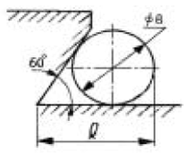
- 8.832㎜
- 10.928㎜
- 12.619㎜
- 14.013㎜
(정답률: 알수없음)

2. KS규격의 안전색과 안전표지를 연결한 것 중 틀린 것은?
- 자주 - 방사능
- 빨강 - 고도의 위험
- 주황 - 항해, 항공의 보안시설
- 파랑 - 위생∙구호
(정답률: 알수없음)
3. 취성이 있는 재료를 큰 경사각의 바이트로 저속 절삭할 때 발생하는 일반적인 칩의 형태는?
- 유동형
- 전단형
- 균열형
- 압축형
(정답률: 알수없음)
4. 일반적인 전동기류의 안전에 관한 설명으로 틀린 것은?
- 전동기에 습기가 있으면 건조시킨 다음 사용한다.
- 단락장치는 정위치로 확실히 돌려 놓는다.
- 권선형 전동기의 경우, 회전자의 슬립링(slip ring)섭동 부분에 주의한다.
- 전압이 규정값보다 떨어졌을 때에는 부하를 높이도록 한다.
(정답률: 알수없음)
5. 지름 40mm의 강봉을 선반에서 20m/min로 절삭할 경우 스핀들 회전수는 몇 rpm 인가?
- 약 159rpm
- 약 132rpm
- 약 212rpm
- 약 258rpm
(정답률: 알수없음)
6. 밀링머신에서 테이블의 뒤틈(back lash) 제거장치는 어디에 설치하는가?
- 변속기어
- 테이블 이송나사
- 테이블 이송핸들
- 자동 이송레버
(정답률: 알수없음)
7. 공작물의 구멍깊이가 t=90mm, 드릴의 지름은 d=30mm, 이송량이 s=0.15mm/회전, 회전수는 n=270rpm, 드릴 끝 원뿔의 높이는 h=9mm 이라면 드릴의 절삭 소요시간 T는 얼마 정도 인가? (단, 드릴 날끝각은 118°이다.)
- 1.4 min
- 2.4 min
- 3.3 min
- 4.3 min
(정답률: 알수없음)
8. 센터리스 연삭기의 장,단점에 대한 설명으로 옳은 것은?
- 장점 : 연삭여유가 작아도 된다.
- 장점 : 대형 중량물을 연삭한다.
- 단점 : 긴 축 재료의 연삭이 불가능하다.
- 단점 : 연속작업을 할 수 없고, 대량 생산에 부적합하다.
(정답률: 알수없음)
9. 퓨즈가 끊어졌을 경우, 안전조치 설명으로 틀린 것은?
- 퓨즈가 없을시 대용으로 구리철사를 끼워 넣는다.
- 고무장갑을 끼고 끊어진 퓨즈를 절연가능한 드라이버로 빼낸다.
- 전원스위치를 완전히 내리고 새 퓨즈를 끼워 넣는다.
- 잘 모르는 경우 전기에 대한 전문 지식을 가진 사람에게 부탁해서 수리한다.
(정답률: 알수없음)
10. 선반에서 길이가 긴 물체를 가공할 때 방진구를 사용하는데 일반적으로 지름의 몇배 이상일 때 사용하는가?
- 8배
- 10배
- 14배
- 20배
(정답률: 알수없음)
11. 삼선법에 의해 숫나사의 유효지름을 측정할 때, 사용되는 마이크로 미터는?
- 포인트 마이크로 미터
- 외측 마이크로 미터
- 나사 마이크로 미터
- 그루브 마이크로 미터
(정답률: 알수없음)
12. 셰이퍼의 평균 절삭 속도를 나타낸 것이다. 옳은 것은? (단, n : 1분간 바이트의 왕복 횟수, L : 램의 행정 길이(mm), K : 바이트 1왕복에 대한 절삭 행정의 시간비, V : 절삭 속도(m/min))
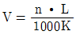
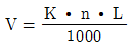
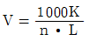
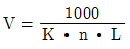
(정답률: 알수없음)
13. 숫돌의 입도를 표시할 때 메시(mesh) 의 수로 표시하는데 입도 100 이란?
- 1변 1인치 체에서 1변에 100개의 눈에 해당하는 수
- 1변 1인치 체에서 1평방인치에 100개의 눈에 해당하는 수
- 1변 1㎝인 체에서 1변에 100개의 눈에 해당하는 수
- 1변 1㎝에 100개의 눈에 해당하는 수
(정답률: 알수없음)
14. 절삭작업에서 채터링(chattering)이 생기는 이유가 아닌 것은?
- 공작물의 길이가 짧을 때
- 바이트의 끝날이 불량할 때
- 절삭속도가 부적당할 때
- 공작물의 고정이 불량할 때
(정답률: 알수없음)
15. 브로칭머신에서 사용하는 일반적인 브로치의 종류가 아닌 것은?
- 날을 박은 브로치
- 일체로 된 브로치
- 전자식 브로치
- 조립식 브로치
(정답률: 알수없음)
16. 연삭기에 연삭숫돌을 끼울 때 다음 중 어떤 숫돌을 택하는 것이 가장 적합한가?
- 두들겨서 탁한 소리가 나야 한다.
- 금이 가있어도 무방하다.
- 두들겨서 맑은 소리가 나야 한다.
- 지름이 작은 것이 좋다.
(정답률: 알수없음)
17. 기계가공에서 절삭성능을 향상시키기 위한 절삭제의 작용으로 틀린 것은?
- 세척작용
- 윤활작용
- 냉각작용
- 밀폐작용
(정답률: 알수없음)
18. 인벌류우트곡선을 그리는 원리를 응용한 이의 절삭방법을 무엇이라고 하는가?
- 창성법
- 총형 커터에 의한 방법
- 형판에 의한 방법
- 래크 커터에의한 방법
(정답률: 알수없음)
19. 선반 척(chuck)의 크기를 옳게 나타낸 것은?
- 조오의 수
- 척의 무게
- 척의 부피
- 척의 바깥 지름
(정답률: 알수없음)
20. 전기화재시 사용되는 소화기 또는 소화재로서 가장 적합한 것은?
- 포말 소화기
- 분말 소화기
- 모래
- 물
(정답률: 알수없음)
2과목: 기계설계 및 기계재료
21. 밀링작업에서 직접분할법에 의해 분할 할 수 없는 수는?
- 3등분
- 4등분
- 6등분
- 9등분
(정답률: 알수없음)
22. 밀링 머신에 사용되는 부속장치가 아닌 것은?
- 슬로팅장치
- 분할대
- 면판
- 아버
(정답률: 알수없음)
23. 가공의 정밀도에서 기하공차 기호에 해당하지 않는 것은?
- 진원도
- 평면도
- 진직도
- 타원도
(정답률: 알수없음)
24. 공작기계의 안내면의 단면으로 맞지 않는 것은?
- 산형
- 평형
- 더브테일형
- 원형
(정답률: 알수없음)
25. 고속도강 바이트로 주철 일감 재료를 절삭하려 할 때 가장 적당한 바이트의 옆면 경사각은?
- 16°
- 12°
- 8°
- 4°
(정답률: 알수없음)
26. 일감표면에 약한 압력으로 숫돌을 눌러대고 일감에 회전운동과 이송을 주며 숫돌을 다듬질할 면에 따라 매우 작고 빠른 진동을 주어 가공하는 방법은?
- 슈퍼 피니싱
- 래핑
- 호닝
- 드레싱
(정답률: 82%)
27. 55°의 센터 게이지라 함은 무엇에 사용하는 것인가?
- 미터 나사를 선반에서 절삭할 때에 나사산의 각도를 맞추는 게이지
- 휘트워드 나사를 선반에서 절삭할 때에 나사산의 각도를 맞추는 게이지
- 분도기 처럼 나사의 테이퍼를 측정하거나 검사할 때 사용하는 게이지
- 55°의 테이퍼를 측정하거나 미터나사를 검사할 때 사용하는 게이지
(정답률: 알수없음)
28. 피부의 대부분에 수포가 생길 때 화상의 정도는?
- 제 1도 화상
- 제 2도 화상
- 제 3도 화상
- 제 4도 화상
(정답률: 알수없음)
29. 절삭저항의 3분력에 속하지 않는 것은?
- 주분력
- 이송분력
- 배분력
- 상대분력
(정답률: 알수없음)
30. 한계게이지 측정 방식의 특징 설명 중 잘못된 것은?
- 합격, 불합격 판정을 쉽게 할 수 있다.
- 제품의 실제치수를 읽을 수가 없다.
- 대량 측정에 적합하다.
- 1개의 치수마다 4개의 게이지가 필요하다.
(정답률: 알수없음)
31. 금속은 가열하면 팽창하고 냉각하면 수축한다. 단위 길이 에 대하여 1℃ 높아지는 데 따라 막대의 길이가 늘어나는 양을 선팽창계수라 하는데 다음 중 선팽창계수가 가장 작은 것은?
- Pb
- Mg
- Mo
- Zn
(정답률: 알수없음)
32. 길이 130㎜의 스프링에 P ㎏f의 추를 달았더니 135㎜가 되었다. 추의 무게는 몇 ㎏f인가? (단, 스프링상수는 1.2 ㎏f/㎜ 이다.)
- 156
- 6
- 162
- 12
(정답률: 알수없음)
33. 구리-니켈계 합금으로 Ni를 40-45% 함유하며 구리나 철과 쌍을 만들면 기전력이 크고 그 값이 온도 변화에 대체로 비례하므로 온도 측정용 열전쌍에 사용되는 합금은?
- 어드밴스(advance)
- 콘스탄탄(constantan)
- 하스텔로이(hastelloy)
- 인코넬(inconel)
(정답률: 알수없음)
34. 다음 중 주석의 용융점을 나타낸 것은?
- 113℃
- 232℃
- 354℃
- 419℃
(정답률: 알수없음)
35. 가열 또는 냉각에 의해서 일어나는 불균일한 소성변형과 외력에 의한 불균일한 소성변형 및 금속조직과 화학성분의 불균일로 인한 소성변형을 무엇이라고 하는가?
- 강도경화
- 응력원
- 변형률
- 잔류응력
(정답률: 알수없음)
36. 나사의 풀림을 방지하는 일반적인 방법이 아닌 것은?
- 와셔(washer)를 사용하는 방법
- 셀프로킹 너트(self-locking nut)에 의한 방법
- 로크너트(lock nut)에 의한 방법
- 터언 버클(turn buckle)에 의한 방법
(정답률: 알수없음)
37. 프와송의 수가 3.3 이면 프와송의 비는 얼마인가?
- 0.270
- 0.278
- 0.303
- 0.333
(정답률: 알수없음)
38. 담금질 후 균열을 방지할 목적으로 Ms점 이하로 서냉시키는 항온열처리 방법을 무엇이라 하는가?
- 오스 템퍼(austemper)
- 마퀜칭(marquenching)
- 마템퍼(martemper)
- 오스퀜칭(Ausquenching)
(정답률: 알수없음)
39. 다음 중 마찰 브레이크가 아닌 것은?
- 블록 브레이크
- 폴 브레이크
- 원판 브레이크
- 밴드 브레이크
(정답률: 알수없음)
40. V 벨트는 쐐기작용의 원리로 마찰효과가 크게 되며 중간정도 거리의 전동에 많이 쓰인다. V 벨트를 평 벨트에 비교한 장점 설명으로 틀린 것은?
- 미끄럼이 적고 속비가 7 - 10 이다.
- 저속운전에 적합하다.
- 운전이 정숙하다.
- 짧은 거리의 운전이 가능하고 2 - 5m 까지 전동할 수 있다.
(정답률: 알수없음)
3과목: 기계제도 및 CNC 공작법
41. 유량 16 ㎣/s, 평균유속 4 ㎜/s 일때 적당한 관의 안지름은 약 ㎜ 인가?
- 40
- 4.0
- 22.6
- 2.26
(정답률: 알수없음)
42. 알루미늄의 특성 설명으로 틀린 것은?
- 비중이 가벼운 금속에 속한다.
- 전기 및 열의 전도율이 좋다.
- 공기 중에서 Al2O3의 얇은 막이 생겨 내식성이 좋다.
- 산과 알칼리에 매우 강하다.
(정답률: 알수없음)
43. 다음 중 일반적으로 도면의 표제란 위에 있는 부품란에 기입되어 있지 않은 것은?
- 수량
- 품번
- 품명
- 단가
(정답률: 알수없음)
44. 보기와 같은 축 A와 부시 B의 끼워 맞춤에서 최소 틈새가 0.2mm이고, 축의 공차가 0.50mm일 때, 축 A의 최대치수와 최소 치수는?
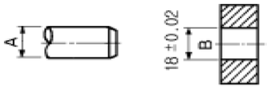
- 최대 : 17.78mm, 최소 : 17.28mm
- 최대 : 18.02mm, 최소 : 17.52mm
- 최대 : 18.00mm, 최소 : 17.50mm
- 최대 : 18.28mm, 최소 : 17.78mm
(정답률: 알수없음)
45. 물체의 경사진 면을 나타내는데 가장 적합한 투상도는?
- 관용 투상도
- 보조 투상도
- 회전 투상도
- 부분 투상도
(정답률: 알수없음)
46. 핸들이나 바퀴 등의 암 및 리브, 훅, 축, 구조물의 부재등의 절단한 곳의 전, 후를 끊어서 그 사이에 회전 도시 단면도를 그릴 때 단면 외형을 나타내는 선은?
- 가는 실선
- 가상선
- 굵은 실선
- 1점 쇄선
(정답률: 알수없음)
47. 3각법에 의한 보기 투상도에 가장 적합한 입체도 형상는?
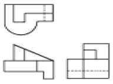
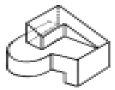
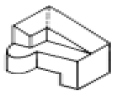
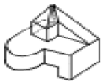
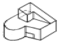
(정답률: 알수없음)
48. 다음 재료 기호 중 회주철품의 KS 기호는?
- FC
- DC
- GC
- SC
(정답률: 알수없음)
49. 분할핀의 호칭 지름은 다음 중 어느 것으로 나타내는가?
- 핀 구멍의 지름
- 분할핀의 한쪽의 지름
- 분할핀 머리부분의 지름
- 두개의 핀 재료를 합쳤을 때의 가상원의 지름
(정답률: 알수없음)
50. 표면상태를 나타낸 도면에서 2.5 가 나타내는 것은?
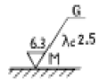
- 표면 거칠기의 상한치
- 표면 거칠기의 하한치
- 커트 오프(cut off) 값
- 표면정도 기호
(정답률: 알수없음)
51. 보기와 같은 제3각법으로 그린 정면도와 우측면도에 가장 적합한 평면도는?
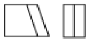
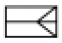
(정답률: 알수없음)
52. 스케치에 필요한 용구 중 간접 모양 뜨기에 가장 필요한 것은?
- 납선
- 반지름 게이지
- 광명단
- 내, 외측 퍼스
(정답률: 알수없음)
53. 다음 형상공차의 종류 별 기호 표시가 틀린 것은?
- 평면도 :

- 위치도 :

- 진원도 :

- 원통도 :

(정답률: 알수없음)
54. 보기 입체도의 화살표 방향이 정면일 경우 평면도로 가장 적합한 것은?
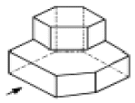
(정답률: 알수없음)
55. i =Ｉm sinωt 와 e = Em cosωt 의 위상차는?
- 0°
- 30°
- 60°
- 90°
(정답률: 알수없음)
56. 소형 전동기의 과전류 보호에 사용되는 것으로서 약호 THR인 계전기는?
- 과전류계전기
- 열동계전기
- 과전압계전기
- 과속도계전기
(정답률: 알수없음)
57. 게이트 중 두 입력이 1과 0일 때, 1의 출력이 나오지 않는 것은?
- NOT 게이트
- OR 게이트
- NAND 게이트
- NOR 게이트
(정답률: 알수없음)
58. 다음 중 표준전지가 사용되는 곳으로 가장 적합한 곳은?
- 전위차계에 사용된다.
- 휘이트스토운 브리지의 전원으로 사용한다.
- 검류계의 감도 측정에 사용된다.
- 진공관 전압계의 전원으로 사용된다.
(정답률: 알수없음)
59. 3V의 기전력으로 300C의 전기량이 이동할 때 몇 Ｊ 의 일을 하는가?
- 150
- 300
- 600
- 900
(정답률: 알수없음)
60. 그림과 같이 접속된 회로에서 콘덴서의 합성 정전용량은?
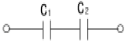
- C1 + C2
- C1 ⒡ C2
- 1/C1 + C2
- C1 × C2/C1 + C2
(정답률: 알수없음)